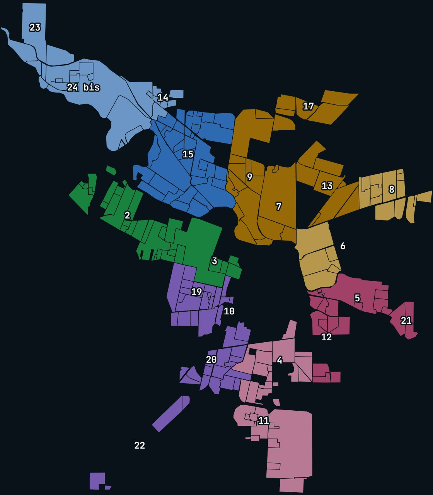
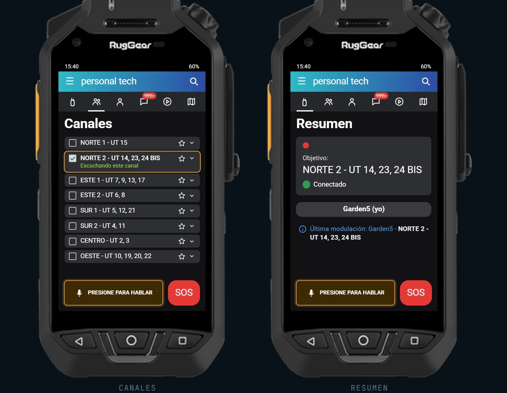
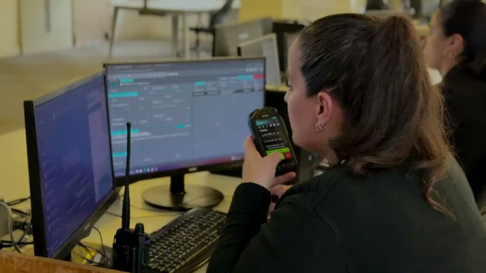
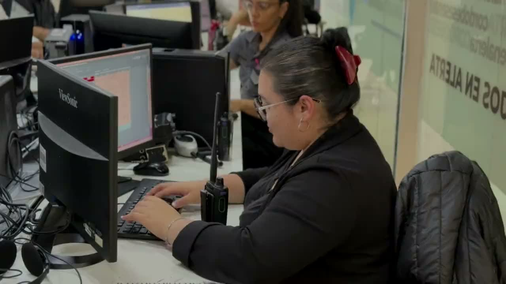
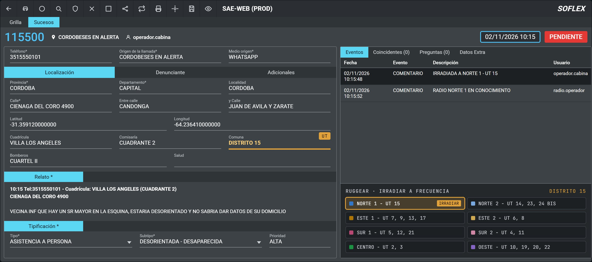

Dirección Monitoreo Cordobeses en Alerta
Material de la exposición
División
de Frecuencia
Cómo se reparte la ciudad en 8 frecuencias RugGear, qué hace el operador de cabina y qué hace el radio operador, y cuánto tiempo tiene cada parte.
01Las 8 frecuenciasLa UT del hecho define a cuál se irradia.
02FuncionesOperador de cabina y radio operador.
03TiemposDesde cuándo corre y cuánto dura cada parte.
04Carga en el SAE WEBUn hecho de ejemplo, paso a paso.
Recorrido de un hecho
Del mensaje del vecino al móvil en la calle
VecinoExplica su situación
CabinaCrea la carta en el SAE WEB
CabinaIrradia a la frecuencia
RadioDespacha y asigna el móvil
Operador de cabinaRadio operadorCalle
1 minOperador de cabinaInterpreta el hecho, crea la carta e irradia a la frecuencia.
1 a 3 minHasta asignar el móvilEntre lo que hace la cabina y el radio operador.
8Frecuencias RugGearNorte 1 y 2 · Este 1 y 2 · Sur 1 y 2 · Centro · Oeste.
Policía de la Provincia de Córdoba · Ministerio de Seguridad1 / 4
División de Frecuencia01 · Las 8 frecuencias
División de frecuencia
La frecuencia la define la UT del hecho
La ciudad se dividió en 8 frecuencias. Cada una agrupa una o varias UT (DJP): el hecho se irradia a la frecuencia de su UT.

Norte
Norte 1UT 15
Norte 2UT 14 · 23 · 24 bis
Este
Este 1UT 7 · 9 · 13 · 17
Este 2UT 6 · 8
Sur
Sur 1UT 5 · 12 · 21
Sur 2UT 4 · 11
Oeste
OesteUT 10 · 19 · 20 · 22
En el SAE WEB la UT figura en el campo Comuna como «DISTRITO». Un cuadrante puede tener varias frecuencias: lo que manda es la UT.

RugGear · personal tech
Cada frecuencia es un canal
- En Canales figuran las 8, con las UT que abarca cada una: NORTE 1 - UT 15.
- Se marca el canal de la UT del hecho: queda «Escuchando este canal».
- En Resumen aparece como Objetivo y abajo, en la última modulación.
- Con Presione para hablar se irradia el hecho a esa frecuencia.
Policía de la Provincia de Córdoba · Ministerio de Seguridad2 / 4
División de Frecuencia02 · Funciones · 03 · Tiempos
Funciones
Dos roles, un mismo hecho

Operador de cabina
Crea la carta e irradia
- Ingresa la alerta e interpreta el hecho.
- Crea la carta: teléfono y calle con la altura; el sistema completa el resto.
- Mira la UT en el campo Comuna.
- Irradia por RugGear a la frecuencia de esa UT.

Radio operador
Despacha y asigna el móvil
- Trabaja su frecuencia: solo las UT que le corresponden.
- Recibe la carta que le irradió la cabina.
- Despacha y asigna el móvil de la zona.
- Deja constancia y eleva la asignación.
Tiempos
El tiempo corre desde que el vecino explica su situación
«Hola, buenas tardes.»No cuenta
«Hay un señor mayor en la esquina, está desorientado…»Arranca el tiempo
01 min1 a 3 min
Operador de cabinaInterpreta, crea la carta e irradia. Crear la carta y designar la frecuencia van en simultáneo.
Radio operadorAbre la carta, despacha y asigna el móvil. Cada paso queda registrado con hora en el SAE WEB.
CalleArribo del móvil al lugar del hecho.
Policía de la Provincia de Córdoba · Ministerio de Seguridad3 / 4
División de Frecuencia04 · Carga en el SAE WEB
Así se carga
Un hecho de ejemplo en el SAE WEB
Réplica con datos ficticios, con fines de capacitación.

- Teléfono del vecino.
- Calle con la altura: el sistema completa solo la geolocalización, la cuadrícula, la comisaría y la comuna.
- En Comuna aparece la UT del hecho: DISTRITO 15.
- Relato; tipo y subtipo se eligen del desplegable mientras se escribe. La prioridad viene dada.
- Con la UT a la vista, se irradia a la frecuencia que corresponde.
UT 15 → NORTE 1
La frecuencia Norte 1 abarca una sola UT.
UT 14 → NORTE 2
Norte 2 abarca tres UT: 14, 23 y 24 bis. Una frecuencia puede tener varias UT.
La presentación completa
Escaneá el código para volver a ver la exposición, con el mapa animado y las réplicas del SAE WEB y del RugGear.
exposicion-division-de-frecuencia.vercel.app
Policía de la Provincia de Córdoba · Ministerio de Seguridad4 / 4